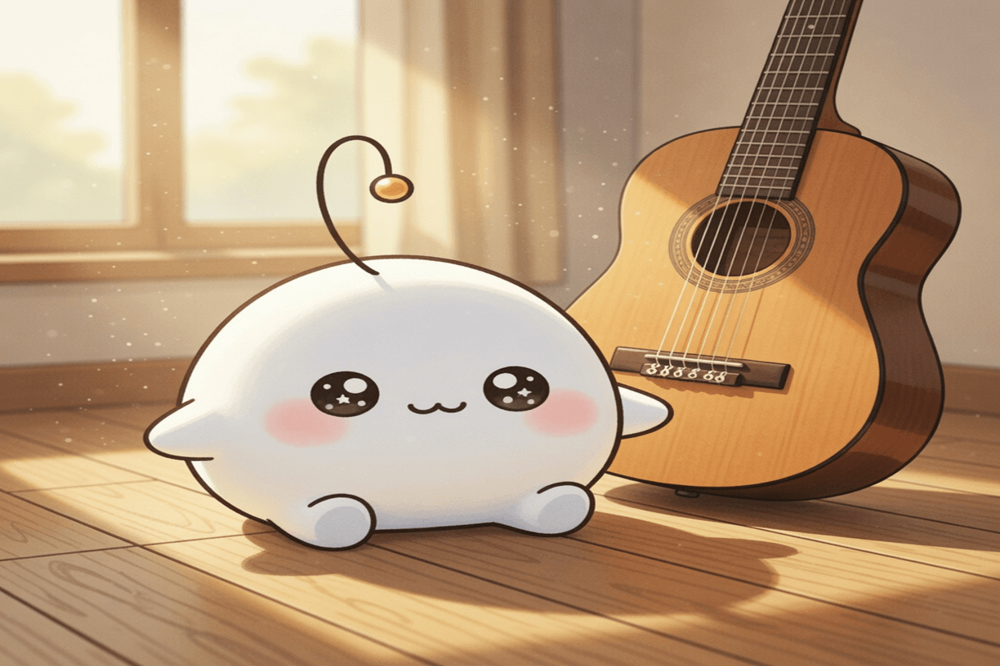

October 13, 2026
October 13, 2026

Inspiration
Sound – Bartosz Ciechanowski (2022)
An interactive essay that lets you see sound instead of only hearing it — pressure, waves, and resonance made touchable.
Show HN: Guitoro, a virtual guitar you strum with your keyboard
A keyboard becomes strings: play turns into a small, immediate pleasure you hear the instant a finger moves.